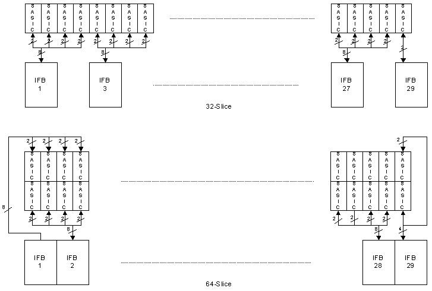
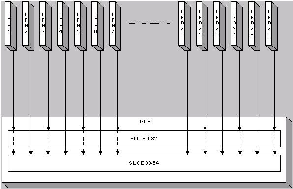

Operating Documentation
Direction 5193575-800, Rev# 5
LightSpeed 7.X Service Information - Adv
Operating Documentation |
The VCT Digital DAS is a new architecture compared to the MDAS-16, MDAS-8 and SDAS. It has distributed power architecture and is scalable from 32 to 64 slices. The VCT DAS and Detector is comprised of the following components:
Field Replaceable Detector Module (FRDM)Section 2)
The FRDM is a single detector module attached via flex connection to two A/D boards for 64 slice or a single A/D board for 32 slice systems. The detector module and A/D board(s) along with the digital cable to the backplane are a single FRU. There are 57 FRDM's that make up the analog portion of the DAS and Detector.
Digital Interface Boards (DIFB) (Section 3)
The DIFB's are the Digital interface boards that take the FRDM digital output signals and send them to the DCB. There are 29 DIFB's for the 64 slice VDAS system and 15 for the 32 slice VDAS system. The HDAS 64 system only has 15 DIFB boards as it is a cost reduced and consolidated version of the VDAS 64 slice system.
DAS Control Board (DCB) (Section 4)
The DCB is the main control board for the VDAS. It packages all the interface card data into a single high-speed serial data stream, compatible with the receive function on the VCT DAS Interface Processor (VDIP)
Backplane (Section 5)
The DAS Backplane is comprised of 2 boards that are passive components only. The backplanes route an ASIC reference signal from the DIFB to the FRDM's and power supply voltages as well as transmitting digital signals.
Air Plenum (Section 6)
The Air plenum is comprised of 5 fans, filter assembly, Heater Control board, Fan control board, thermal sensors, and air flow sensors.
48V Power supply (Section 7)
The 48V power supply is a single power supply on the rotating assembly that powers most all of the components. This supply is not specific to the DAS. All voltages used by the DAS and Detector are generated via on board regulators on the DCB and DIFB's. The FRDM power is supplied by regulators on the DIFB's.
The Common Fan Control (CFC) and Detector Heater Control (DHC) board theory can be found in the Gantry Thermal Theory document. These boards are a part of the detector subsystem in VCT systems.
| NOTE: | The 64 slice HDAS VCT system looks like the 32 slice VDAS system in that it has only 15 DIFB boards but has both A and B side A/D boards on the digital modules like the 64 slice VDAS. |
The FRDM is made up of a Detector module, and A/D board set along with a digital cable attached to the A/D boards which is then connected to the DAS backplane. For the VCT system, the detector is no longer a single assembly. The detector is now 57 individually replaceable detector modules and associated A/D functional components. For more details about this part see VCT Detector Theory.
The DAS interface board that is abbreviated as IFB is to act as an interface bridge between the FRDM and the DAS control board (DCB). The IFB processes multiple low speed data from the A/D module boards and then sends high-speed data to the DCB in a serial stream. The IFB is used for both 32-slice and 64-slice CT systems.
Table 1: A/D Module Interface Signals
| SIgnal | Description | Signal Level | From | To |
| ADM_RST_N | A/D board reset, active low | 3.3VLVTTL | IFB | A/D |
| ADM_TX_CLK(1:0) | Transmission clock to the A/D | LVDS | IFB | A/D |
| ADM_TX_DAT(3:0) | 4 LVDS pairs of transmission data buses | LVDS | IFB | A/D |
| ADM_RX_CLK(3:0) | 4 LVDS pairs of receiving clocks from each A/D board. | LVDS | A/D | IFB |
| ADM_RX_DAT(3:0) | 4 LVDS pairs receiving data buses | LVDS | A/D | IFB |
| ADM_PRESENT(3:0) | A/D module presence flag. The signal is tied to DGND on the A/D board. | LVDS | IFB | A/D |
| I2C_SDA_ADM | Data input/output for I2C interface on A/D | 3.3VLVTTL | Bidirectional | Bidirectional |
| I2C_SCL | Clock input pin for I2C interface on A/D | 3.3VLVTTL | IFB | A/D |
| P1V5_FPGA | A/D FPGA core voltage | 1.5VLVTTL | IFB | A/D |
| P2V5_FPGA(3:0)(P2V5_DIG) | A/D FPGA I/O voltage | 2.5VLVTTL | IFB | A/D |
| P2V5_ANA(3:0) | +2.5V analog voltage for GDAS ASIC | 2.5V | IFB | A/D |
| N2V5(3:0) | -2.5V analog/digital voltage for GDAS ASIC | -2.5V | IFB | A/D |
| P2V5_DIG(3:0) | +2.5V digital voltage for GDAS ASIC | 2.5V | IFB | A/D |
| P3V3_DIG | +3.3V digital voltage for I2C, EEPROM | 3.3V | IFB | A/D |
| P3V3_ANA | +3.3V analog voltage for the current reference | 3.3V | IFB | A/D |
| AGND(3:0) | Analog ground to the A/D board | AGND | IFB | A/D |
| DGND(7:0) | Digital ground to the A/D board (ASIC, FPGA) | DGND | IFB | A/D |
| P2V5_ANA_FB(3:0) | +2.5V analog voltage feedback | 2.5V | A/D | IFB |
| N2V5_FB(3:0) | -2.5V feedback | -2.5V | A/D | IFB |
| P2V5_DIG_FB(3:0) | +2.5V digital voltage feedback | 3.3V | A/D | IFB |
| DCLK_ADM(3:0) | Configuration clock. | 3.3V | IFB | A/D |
| DATA0 | Configuration data | 3.3V | IFB | A/D |
| nSTATUS | Configuration status | 3.3V | A/D | IFB |
| CONFIG_DONE | Configuration done | 3.3V | A/D | IFB |
| nCONFIG | Restart configuration | 3.3V | IFB | A/D |
Table 2: DCB Interface Signals
| Signal | Description | SIgnal Level | From | To |
| IFB_RST_N | (1). Reset DSP and FPGA during power up. (2). Whenever the IFB has a problem or a system error happens, DCB asserts a reset signal to the IFB. | 3.3VLVTTL | DCB | IFB |
| IFB_TRIG | Trigger signal from DCB | LVDS | DCB | IFB |
| IFB_CLK | IFB clock for FPGA and GDAS | LVDS | DCB | IFB |
| IFB_SDAT | High speed serial output data to DCB | LVDS | IFB | DCB |
| CAN_HI | CAN transceiver high signal | 3.3VLVTTL | Bi-directional | Bi-directional |
| CAN_LO | CAN transceiver low signal | 3.3VLVTTL | Bi-directional | Bi-directional |
| IFB_FLT_N | Fault line. The line goes low when a failure occurs | 3.3VLVTTL | IFB | DCB |
| POWER_SYNC_IN | DC/DC synchronous signal from the DCB. Make all 29 IFB boards sync. | 3.3VLVTTL | DCB | IFB |
Table 3: Hard Wired SIgnal (From Backplane)
| Signal | Description | Signal Level | From | To |
| IFB_ADDR | IFB address | 3.3VLVTTL | BP | IFB |
| COM_GND_TIE | Common ground tie | GND | IFB | BP |
| SHD_GND | LVDS shielding/Chassis ground | GND | IFB | BP |
The IFB performs the following functions:
Voltage Regulation
Power Supply Sensing
Voltage Monitoring
Level Translation
CAN Interface to DCB
Data Formatting (FFP)
Serial Interface with the A/D module.
ASIC Control
Point-To-Point Data Transmission to DCB
Compensation – Gain Tracking
Internal – ASIC channel to channel; External – Using a compensation signal
Offset Compensation
Linearization
Temperature Sensing
Diagnostics
This section defines the interface between the IFB and the external devices with which it communicates.
The 32-slice and 64-slice VDAS system architectures are scalable. Illustration 1 shows the 32-slice and 64-slice interfaces between the IFBs and A/D modules. The HDAS 64 slice system has only 1 DIFB for each set of 4 digital modules like the 32 slice VDAS configuration but it still has 2 A/D boards per digital module so each DIFB talks to 8 A/D boards.
Illustration 1: IFB and A/D Module Interface Block Diagram

Illustration 1 is showing both 32-slice and 64-slice interfaces between the IFB and the A/D module. Both interfaces share a common backplane. Only the odd number IFBs are populated for the 32-slice CT. For instance, the 32 slice VDAS and 64 slice HDAS versions only have IFB's numbered 1,3,5, etc. The 32-slice CT requires 15 IFBs. Each of the first 14 IFBs is connected to 32 ASICs, and the last IFB is only connected to 8 ASICs. The 64-slice CT requires 29 IFBs. Each of the first 28 IFB is connected to 32 ASICs, and the last IFB is connected to only 16 ASICs. To maintain gantry balance, blank cards are inserted for the even numbered DIFB slots for a 32 slice system. Blank cards are also used for the “B” side A/D board since the 32 slice detector module only speaks to a single A/D board for each of the 57 FRDM's.
One IFB communicates with four A/D boards. The IFB has separate transmitting and receiving lines for each A/D boards. The data lines are Low Voltage Digital Signals (LVDS).
It is a source synchronous design. Both transmitting and receiving data are transmitted with their clocks. The clocks are LVDS signals.
Due to the consideration of the saving the IFB backplane connector pin counts, the IFB only sends two TX clocks to four A/D boards (Star clock distribution).
There is a separate reset signal (ADM_RST_N) from the IFB to the A/D boards. The reset signal will reset GDAS ASICs and FPGA. The reset signal is derived from either DCB reset signal or DSP soft reset.
The IFB will supply power to the A/D boards (Analog +2.5V, Analog –2.5V, Digital +2.5V, -2.5V, Analog +3.3V, Digital +3.3V, and Digital 1.5V). Due to the long trace between the IFB and the A/D modules, the GDAS ASIC power will be sensed at the FRDM's backplane connectors, so that the GDAS ASICs will get more accurate power by regulating the outputs of the Source voltage on the IFB. The sense lines do not go through the digital cable onto the A/D board itself due to a lack of available signal lines on the digital interface cable.
ADM_PRESENT_N(3:0) are the present signals to specify if the A/D boards are present or not. The signal is an active low signal.
There are five signals (DCLK, CONFIG_DONE, nCONFIG, nSTATUS, DATA0) for the IFB to remotely configure four A/D boards. The DCLK will be controlled by the DSP. Only odd numbered IFB's can configure the A/D board FPGA. The even numbered IFB cannot configure the A/D board FPGA, but it monitors the CONFIG_DONE signal from the odd numbered IFB. This was necessary to be completely compatible with the 32 slice architecture.
The FRDM shall be responsible for the following functions:
Single Access Read or Write from/to GDAS ASIC register. This operation is used to read and write control data to and from the many individually addressable ASIC control registers. It also includes dynamic write.
Sequential Access Read or Write from/to GDAS ASIC register. This operation is used to read or write trim code registers for all 64 channels in one sequential operation.
Channel data read is also a kind of the sequential read operation. The IFB reads 4 serial data buses at the same time with a burst mode.
The following diagram shows the 32-slice / 64-slice interface between the IFBs and the DCB. For the 32-slice CT, only odd numbered IFBs are populated. For the 64-slice VDAS CT, all 29 IFBs are populated, only odd numbered IFB's for 64 slice HDAS. For VDAS, the odd numbered IFBs are always connected to the slice1 to slice32, and even numbered IFBs are always connected to the slice 33 to slice 64.
Illustration 2: IFB and DCB Interface Block Diagram

The interface between the IFB and DCB is a point-to-point connection. A serial data output signal (IFB_SDAT) is a pair of low voltage differential signal. The signal is 480 Mbps for both 32-slice and 64-slice CTs. The serial data is a LVDS signal which is generated through a True LVDS transmitter in FPGA. The input clock of the transmitter is a 40 MHz LVDS signal (IFB_CLK) from the DCB. The clock is synthesized by a transmitter PLL to generate one 60 MHz clock for the True LVDS transmitter and another 60 MHz for the A/D module interface. The trig signal (IFB_TRIG) from the DCB is a LVDS pair signal as well. The signal initiates a view collection. During the initialization, the IFB sends a series of the training patterns to the DCB. At the DCB side, a Dynamic Phase Alignment (DPA) block aligns the clock to the incoming data (IFB_SDAT). The DPA will avoid the clock to the data skew issue. A Byte Aligner at the DCB will guarantee the parallelization boundary or byte boundary for each data stream at the DCB. A Channel Aligner (Word Aligner) at the DCB will also make all serial data streams from 15 or 29 IFBs to get aligned. Once the IFB is ready to send channel data to the DCB, the IFB sends a 16-bit word header (0xF628), the 1040 (32-slice) or 2080 (64-slice) data channels, and 16 auxiliary data for temperature signals and diagnostic data. Between the each view, the training pattern will be transmitted.
The 32-slice and 64-slice have same channel output sequences. For the 32-slice CT, only odd number of the IFB will be populated (IFB1, IFB3, IFB5, …, IFB29). For the 64-slice CT, all 29 IFB's will be populated. In both cases, each IFB is connected to four A/D boards, and is responsible to the 64 channels in X-axis and 32-slice in Z-axis. The odd number IFBs will be responsible to the 1-32 slices and even number IFBs will be responsible to the 33-64 slices. This makes the Slipring transmission channel scalable. For the 32-slice CT, only one Slipring transmission channel is used. For 64-slice CT, two Slipring transmission channels are be used. The following table shows the channel out sequence for both 32-slice and 64-slice CT from the IFB to the DCB.
Table 4: Channel Output Sequence
| Channel Output Sequence | Channel Number | Slice Number Odd/Even IFB |
| 0 | View Header | |
| 1 | 1 | 1/33 |
| 2 | 2 | 1/33 |
| sequence continues | ||
| 65 | 65 | 1/33 |
| 66 | 1 | 2/34 |
| sequence continues | ||
| 2079 | 64 | 32/64 |
| 2080 | 65 | 32/64 |
| 2081 | Auxiliary Data 1 | Temp 1 (A/D M_1) |
| 2082 | Auxiliary Data 2 | Temp 2 (A/D M_1) |
| 2083 | Auxiliary Data 3 | Temp 1 (A/D M_2) |
| 2084 | Auxiliary Data 4 | Temp 2 (A/D M_2) |
| 2085 | Auxiliary Data 5 | Temp 1 (A/D M_3) |
| 2086 | Auxiliary Data 6 | Temp 2 (A/D M_3) |
| 2087 | Auxiliary Data 7 | Temp 1 (A/D M_4) |
| 2088 | Auxiliary Data 8 | Temp 2 (A/D M_4) |
| 2089 | Auxiliary Data 9 | Temp (IFB) |
| 2090-2096 | Auxiliary Data 10-16 | Reserved |
The CAN bus is used to communicate with the DCB and other IFBs through a CAN transceiver. There are only two serial lines to be connected on CAN bus: CAN_Hi and CAN_Lo (Differential , bi-directional signal pair). The bus will be implemented as a multi-master configuration. Either the IFB or DCB can arbitrate on the bus to become the master. Communication is accomplished through a command/acknowledge protocol, rather than a register-access protocol. This maximizes bus utilization and interface flexibility.
Each IFB connected to the bus is software addressable by an unique address and each IFB shall have its own unique address, known as its slave address. This address is determined by the IFB backplane connection and the unique address is determined by the IFB's location in the backplane.
The IFB and FRDMs have separate I2C data lines (SDA). A multiplex in the FPGA will select which I2C bus (SDA) will be used.
Besides one I2C temperature sensor for itself, the IFB also writes to and reads from two temperature sensors and one serial EEPROM for each FRDM. The IFB board is connected to 4 A/D boards, so one IFB board shall interact with nine temperature sensors and four serial EEPROMs. All sensors and EEPROMs are tied through a 2-wire serial interface (I2C bus).
The following test points and LED's are available on the DIFB. There are no adjustable power supplies in the DAS subsystem. Only the single 48V power supply feeding the DAS and most other components on the rotating assembly.
Table 5: LED's
| LED | Function | Condition: Blinking Green | Condition: OFF |
| DS1 | Error | Error code | No errors |
| DS2 | Trigger | Trigger occuring | No trigger activity |
| DS3 | CAN Activity | CAN activity present | No CAN traffic |
| DS4 | Not used | Not used | Not used |
Table 6: Test Points
| Label | Name | Description (used on) |
| TP6 | P3v3 | +3.3 V (IFB, A/D Module) |
| TP7 | N3v3 | -3.3 V |
| TP4 | P3v3D | +3.3V digital |
| TP1 | P1v8D | +1.8V Digital (IFB) |
| TP3 | P1v5F | +1.5V Digital (IFB, A/D Module) |
| TP5 | GND | Analog Ground |
| TP9 | GND | Digital Ground |
The DCB is the main control board for the VCT, 32/64-Slice Data Acquisition System (DAS). It packages all the interface card data into a single high-speed serial data stream, compatible with the receive function on the 32/64-Slice DAS Interface Processor (DIP).
From Interface Boards (DIFB):
Serial Data Streams, for an 32- or a 64-slice system
IFB CAN Bus communication for status, faults, chassis temperature readings, and serial number information
Interface Board Fault Line
From On-Rotating Processor (ORP):
Input View Triggers
RCIB CAN Bus communication for scan prescription information and FLASH download
RCIB CAN Fault Signal
From Detector Heater Control board (DHC):
RS-232 Bus communication for status, faults, detector temperature readings, and detector identification information
From Generator:
- KV & MA analog signals
From Backplane:
- Power supply voltages
To Interface Boards:
Shift Clock
Trigger Signal
Converter CAN Bus communication for control information
Reset signal
External reference current
To On-Rotating Processor (ORP):
RCIB CAN Bus communication for DAS status, error, or scan complete information
RCIB CAN Fault Signal
To Detector Heater Control board (DHC):
RS-232 Bus communication for control information
To Detector:
- FET Control signals
To Slip-ring (and then on to the Scan Reconstruction Unit (SRU) ):
- High-speed serial data stream containing the view data with embedded FEC CRC.
The DCB will perform the following functions:
Interfaces with the On-Rotating Processor (ORP) for Rx reception and scan completion via CAN bus.
Sets up gain and offset trim and controls the interface boards, via the IFB CAN interface.
Receives triggers and starts acquisitions with the interface cards.
Performs serial-to-parallel conversion on data streams from the interface boards, does parity checking on the data, and formats the data for view transmission.
Adds Forward Error Correction (FEC) to the channel data and sends it across the slip-ring to the Scan Reconstruction Unit (SRU) via the high-speed serial data interface.
Detects jitter and timeouts in the view trigger signal.
Controls the operation of the Detector Heater Control board and monitors the subsystem for faults.
Monitors the power supply voltages to make sure they are within the software programmable limits.
Acquires the kV and mA values for each scan.
Controls the FET switch array in the detector to change the number and thickness of scan slices (32-slice only).
Monitors the DAS subsystem for various faults.
Stores & sums the z-axis reference channels, and performs calculations that control the collimator cam positioning. This is used to track the x-ray beam and keep it centered on the detector.
Provides a current reference to the interface boards for A/D boards.
Two broadcast signals from the DCB is used to control the sequencing of data onto the data streams. The serial clock (IFB_CLK) is used primarily to set the bit transmission rate. The serial clock is a 80 MHz LVDS pair signal. The trigger signal (IFB_TRIG) is used to initiate the sampling and transmission of all the channels on the IFB. The trigger signal is also a LVDS pair signal.
IFB_CLK is a 50% duty cycle clock driven by the DCB. IFB_CLK is sent to all of the interface boards differentially through the chassis backplane. To reduce loading, the signal is replicated on the DCB with a BUS LVDS driver chip such that any single differential pair will drive eight or less loads. IFB_CLK will be valid before the IFB’s are taken out of reset, and will remain valid while the IFB boards are not in reset.
The trigger signal (IFB_TRIG) will be used to initiate the sampling and transmission of all the channels on the IFB. The trigger signal is also a Bus LVDS pair signal. Like IFB_CLK, this signal is replicated on the DCB with a BUS LVDS driver chip such that any single differential pair will drive eight or less loads.
In response to an external or internal view trigger, DCB will generate an IFB_TRIG pulse to all of the interface boards through the chassis backplane. The IFB shall treat the IFB_TRIG signal as an asynchronous signal. Both external and internal view triggers have the same effect on the DCB.
The only mechanism to reset the converter boards will be to assert the IFB_RST signal. This active high, single-ended signal is set by the DCB and sent to all interface boards through the chassis backplane. DCB sets the IFB reset as long as one of the following two conditions is true.
During DCB reset
Interface Board Reset Register on DCB is set by firmware
The period of assertion is the same as the length of the condition causing the reset.
An active low signal, IFB_FLT_n, is generated by an interface board to notify the DCB in the event of a fault condition. Any one or more interface boards can assert this signal at anytime. When the signal is asserted, the DCB will interrogate all interface boards via the Interface Board CAN bus to determine the cause and report an error condition when appropriate. The actual interrogation is done by firmware. In the event of an error condition where IFB_FLT_n is stuck low on power-up, the DCB will detect this via a level-sensitive interrupt in the control FPGA.
The DCB produces an external reference current, IREF_EXT, to the interface boards for diagnostic purposes. The 1.0 uA signal is generated by a current source that is resident on the DCB. The test current is sent to all interface boards.
The CAN bus used between the DCB and the converter boards is a low-cost, 8-bit oriented, bi-directional serial communications bus which requires only two serial lines: serial CAN data high (CANH) and serial CAN data low (CANL). Communication is accomplished through a command/acknowledge protocol, rather than a register-access protocol. This maximizes bus utilization and interface flexibility.
Using a CAN bus to implement DCB / IFB control allows the interface boards to be autonomous, smart nodes. Each interface card will be responsible for its own diagnostic and setup, alleviating any unproductive communication between the DCB and the interface cards.
The maximum baud rate of the CAN bus is determined by the number of nodes on the bus, which contribute to the overall bus impedance. The programmable data rate can be up to 1Mbps. The CAN data rate shall be compatible with at least baud rate of 250 Kbps.
Each device connected to the bus is software addressable by a unique address and each interface card will have its own unique address, known as its slave address. This address is determined by the interface card backplane connection and the unique address is determined by the card's location in the backplane. The CAN bus will operate at a baud rate of 500 Kbps.
The DCB will accept DAS channel data from the converter boards, per the following definition. The Interface Board processes digital channel data from the GDAS ASIC’s resident on the A/D boards. This data is combined with temperature measurements into a single point-to-point serial data stream to the DCB. In a 64-slice configuration, 29 interface boards are installed providing 29 point-to-point serial streams into the DCB. In a 32-slice configuration, only 15 interface boards are installed and only 15 serial streams are used. Each serial stream will utilize a single LVDS differential pair to minimize radiated noise and enhance signal integrity. This LVDS pair will run at a rate between 180 and 240 Mbps.
During DAS initialization, the IFB shall send a training pattern to the DCB in order to lock the DCB receiver circuitry onto the serial stream. At the DCB, a Dynamic Phase Alignment (DPA) block will align the sampling clock phase to the incoming data phase. If the Byte Aligner is not able to guarantee the byte boundary within specifications, the DCB will report a serial data stream communication error.
When the IFB receives a trigger signal from the DCB, the IFB starts to send its channel data. During the each view period, there will be some idle time, during which the IFB will send alternating 1’s and 0’s (1 0 1 0 1 0 …) to maintain the DPA’s lock.
The interface from the DCB to the DIP in the SRU is designed to run at 2.488 Gbaud per link, where each link represents a physical channel on the slipring. The design requires one 2.488 Gbaud channel for a 32-slice system and two 2.488 Gbaud channels for a 64-slice system. The DCB will be designed for up to four 2.488 Gbaud channels for 128-slice scalability.
The DCB Host Interface will be used to control DAS operation and to communicate DAS status. The following sections describe the control interface. The DCB Host Interface makes use of Controller Area Network (CAN) technology. The DCB’s use of this technology including the physical interface conforms to all CAN specifications. All CAN signals are optically isolated between the DCB and the network. The DCB provides a port to interface with a CAN controller.
The DCB has a fault interface, called RCIB_CAN_FLT, consisting of a twisted pair wire signal that is bi-directional to the DAS. Both input and output are optically isolated. The DAS will use this interface to detect an abort condition from other controllers and to initiate an abort to other controllers. When a fault is initiated or detected, the DAS will go into its fault sequence.
There are two methods to reset the DAS, via CAN message or reset bus. Both methods cause the DAS to go through the same reset sequence and timing. All DAS hardware is in a known and safe state upon exiting reset. The reset bus uses a twisted pair wire signal, called RCIB_CAN_RST, that is optically isolated from the DAS. The DAS can only monitor but not drive the reset bus.
The DCB receives the external view trigger input, called E_TRIG, from the ORP via a twisted pair wire. This input signal is optically isolated from the DAS and causes the DAS to begin view data collection.
Measured scan kV and mA are read by the X-ray Generation Subsystem and fed back to the DAS so they can be inserted into the view data stream. The Generator Interface is implemented on a connector located on the backplane and signals are routed to the DCB via the backplane. These signals are differentially driven by X-ray Generation and received by the DCB.
The DCB generates a maximum of 18 signals to configure the detector FET MUX circuitry. These lines are used only for the 32-slice system. Each of the following 3 groups of detector modules uses a maximum of 6 of these signals for their MUX configurations: Z-axis Upper (ZUFET), Data Channel Detector (DFET), and Z-axis Lower (ZLFET). These signals are set to 0 volts and –2.5 volts when they are in the OFF and ON states respectively.
The DCB ommunicates with the Detector Heater Control board (DHC) using an RS-232 serial communication interface. This interface provides the path for the DCB to setup and control DHC operation, to monitor the DHC subsystem for faults, and to obtain detector temperature readings for inclusion in the view data stream. The serial interface is a simplified 2-wire RS-232 implementation (with no hardware handshake capability) operating at 19.2 kBaud. The setup includes 8-bit word length, no parity, and one stop bit.
On power-up the DCB detects the presence of the DHC in the system using a resistor located on the DHC. The DCB will convert the resistance proportionally and compare the value to a pair of setpoint registers. If the presence of the DHC is detected, the DCB will begin to communicate with the DHC via the RS-232 interface. The Detector Heater Control board Interface is implemented on a connector located on the backplane. Signals are routed from the DCB to this connector via the backplane. The signal voltages are a minimum of +/- 5VDC. Signal currents are on the order of 10mA.
The push button reset will initiate a hard reset to all the board logic. This initializes all the hardware to a known state, and causes the Nios processor to reboot. The DCB Control FPGA will also be reset via this push button switch; however, it will only re-configured from FLASH PROM at board power-up. This reset is provided for debug and bring-up purposes only.
Below are the test points and LED's available on the DCB.
Table 7: LED's
| DS # | Function | Green | Yellow |
| 1 | PWR | Board has 3.3V digital power | |
| 2 | RESET | Lit while in reset | |
| 3 | FPGA | FPGA loaded(No light = error) | Loading |
| 4 | B/A CODE | Application code loaded(No light = error) | Boot code loaded |
| 5 | HRTBEAT | Heartbeat | |
| 8 | GCAN_FLT | RCIB can bus fault | |
| 6 | GCAN_RX | Receiving data from RCIB can bus. | |
| 7 | CCAN_RX | Receiving data from converter card can bus | |
| 9 | Optlink | Not implemented. | |
| 14 | APP<0> | Application code controlled | |
| 15 | APP<1> | Application code controlled | |
| 16 | APP<2> | Application code controlled | |
| 17 | APP<3> | Application code controlled | |
| 10 | FLT_SENS_EN | Fault line is EnabledOFF: Fault line is Disabled | |
| 11 | FLT_YES | In Fault Condition OFF: Not in Fault Condition) | |
| 12 | HCOM_ACT | Connected to Host(Off = Not connected) | |
| 13 | ERR_CODE | Error code indicator |
Table 8: DCB Test Points
| Test Point | Label | Description |
|---|---|---|
| TP3, TP4, TP6, TP7, TP16, TP17, TP18, TP19 | GND | Digital Logic Ground |
| TP10 | P12V | Positive 12V supply from 48V to +-12V supply |
| TP14 | N12V | Negative 12V supply from 48V to +-12V supply |
| TP5 | 3V3 | 3.3V digital supply |
| TP8 | 1V5 | 1.5V digital supply |
| TP1 | 3V3_ISO | 3.3V isolated supply, used for optical isolation circuitry |
| TP2 | GND_ISO | Isolated ground, used for optical isolation circuitry |
| TP12 | P5VA | Positive 5V analog supply |
| TP11 | N5VA | Negative 5V analog supply |
| TP13 | P_VARIABLE | Variable analog supply (+10V analog supply) |
| TP9, TP15 | AGND | Analog GND. |
There are two backplanes for the Digital DAS. One backplane is a “Low Channel” backplane that has one DCB slot, 14 DIFB slots, an inter-backplane connector, two power connectors and sub-miniature D style connectors for Common Fan Controller (CFC), Generator Inputs and RCIB connections. This backplane interfaces to the lower numbered detector modules. The other backplane is a “High Channel” backplane and it consists of 15 DIFB slots, an inter-backplane connector and two power connectors. Unlike previous DAS backplanes, the main power comes to each backplane separately and does not distribute between backplanes. The backplanes do not have any active components on them.
The backplanes for the VCT Digital DAS:
Convey the power to the Field Replaceable Detector Modules (FRDM), the DIFBs and the DCB.
Provide mechanical attachment and support for the DIFBs and DCB
Act as an interface between the FRDM's A/D boards and the DIFBs to transfer the Digital data and control signals.
Provide for data and control transfer between the DCB and the DIFB cards.
Provide connectors for interfacing the DCB CAN bus communications to/from the Rotating Controller Interface Bus (CT-RCIB), an optical data link to the slip ring interface boards and for interfacing the DCB with the Detector Heater Control Board, and the generator kV and mA signals.
Provide diagnostic LEDs for displaying the state of the detector FET control signals. (For use on 32-slice only)
Provide FET Command and bias lines (For use on 32-slice only). These are pass through signals from the DCB to the FRDM's Detector module flex connections.
Have chassis ground planes on the outer layers for EMC control purposes and these are “stitched” at regular intervals along the edges.
Configurations: The DAS is designed to work as a 32 and 64 slice DAS without any hardware configuration other than the number of DIFB cards inserted into the DAS backplanes. The backplanes do not change between configurations.
The DCB clock and trigger signals as well as the 48V power is routed on the backplane to groups of DIFB's (1-8, 9-14, 15-22, and 23-29).
The DAS air plenum is comprised of the plenum housing, filter assembly, 5 fans with rotational feedback, three temperature sensors, a fan control board and heater control board.
There are 5 variable speed fans mounted to a fan plate on the front of the Air plenum. Each fan is individually controlled from the Common Fan Control Board.
There are three temperature sensors within the air plenum that send data back to the CFC for use in fan speed control.
There is a single filter with honeycomb EMC shield integrated onto the back side of the filter. With the fan plate off the front of the air plenum, the filter side can be seen. The EMC shield is susceptible to damage so care must be taken when handling the filter assembly.
By using variable-speed fans, this design both mitigates the effects of air temperature on the detector with the plenum (rotating) and minimizes the gantry air temperature variation (stationary). The external firmware control allows the CFC to be used on both the rotating and stationary sides without different programming for each application.
The fan control algorithm is run in firmware on the DCB using feedback data from the CFC and the A/D board temperatures read through the DIFBs to the DCB. The CFC passes the plenum fan speed feedback and digital temperature measurements to the DCB firmware and will receive fan speed control signals via RS232. The CFC communicates to the Heater Controller via RS232 to receive heater-rail temperatures.
Illustration 3: DHC and CFC Block diagram

Inputs:
5 Digital tach signals (2 pulses per revolution) from fan
3 Thermistor temperature sensor inputs.
5 Velocity sensors
Outputs:
5 Fan 0-10V analog voltage output for speed control. Fans begin to spin at ~1.25V Control Voltage
48VDC for each of the 5 fans.
12VDC control for stationary heater solid state relay (SSR) - Not to exceed 30mA at 12Vdc
Inputs/Outputs:
Digital heater feedback from Detector Heater via Heater Controller board through an RS232 connection (isolated on the Heater Controller board).
Firmware communications from the DCB/TGPU firmware via an electrically isolated RS232 connection.
Detault Mode:
All fans will run at 1/2 speed, the gantry heater shall be in the “Off” state, and the board will be ready for communication. The amber Default Mode LED will be lit. The system will stay in this state until a control communication from the host is received and the hardware watchdog circuit is enabled.
Hardware Watchdog:
A “watchdog” function exists in hardware that will set and hold the board in “Default Mode” within 1 second on power up. The CPU, once initialized will write to the watchdog register continuously, which will allow variable fan speed and heater control from host. If CPU does not continuously refresh watchdog within 1 second, the board will enter Default Mode with the heater disabled, and the fans set at ½ speed via hardware without any firmware interaction. The host is able to determine that the hardware watchdog failed.
Runtime diagnostic self test:
Detect and report open thermistors
Detect and report shorted thermistors
Detect and report Stationary Heater over-temp (open circuit when it should be closed)
Memory Checksum or CRC check
The diagnostic self test will run on power on and also during regular operation at regular intervals timed at 1.15 seconds between tests. Test results will be communicated to host on request. This method allows the host to query diagnostic results multiple times at multiple gantry positions while rotating. This will simplify diagnosis of rotation-related intermittent problems.
Unconnected/Unused:
Unconnected fans, thermistors and airflow sensors will be reported along with the connected ones. The host firmware will determine if the component is connected and reporting an error or not connected at all based on system configuration.
48V Power supply monitor circuit:
The CFC will monitor the 48V input at an accuracy of ±500mV and store the information in memory to be read by the host for diagnostic reporting.
The detector heater controller is designed to maintain rails at a uniform temperature which is critical for controlling the photodiode and preventing any changes to the rail temperature profile. Changes in the rail temperature or the temperature profile can both lead to IQ errors due to poor diode temperature control. By using variable speed fans, this design will mitigate the effects of air temperature variation (rotating). The DHC is used on the rotating side with an RS232 interface to the common fan control (CFC) and the external firmware control.
The heater controller provides PID control for up to 5 independent heater zones but the Sherlock detector is only using 3 zones. PID control is required to accommodate the wide range of heat fluxes(duty cycle) that will be encountered in operation. In order to prevent EMI issue, the heater controller provides a constant filtered DC voltage to the rail heater zones. All PWM chopping of the input voltage is done within the controller. Also the communication of the temperature measurements of the rails, will be done to the Common Fan Controller (CFC) via the RS232 protocol.
Inputs:
3 Thermistor temperature sensors from rails on detector assembly.
48V DC power supply.
Outputs:
- Voltage to the 3heater zones between 0 to 48V.
Input/Outputs:
Digital heater feedback from Detector Heater via Heater Controller board through an electrically isolated RS232 connection.
3 digitized thermistor sensors.
Thermistor flag informing about the functionality.
Heater health flag.
Boot up sequence and default mode: Upon POWER ON, all heaters will start heating the detector and measurement will be made constantly by the DHC at every 5 seconds. The heater will stay in ON mode until a communication with DHC specifies otherwise.
Diagnostic self test
Detect and report open thermistors
Detect and report shorted thermistors
Detect and report open heaters
Detect and report shorted heaters
Memory Checksum or CRC check
The diagnostic self test will run on POWER ON and also during regular operation at regular intervals timed at 1.15 seconds between tests. Test results will be communicated to the DHC on request. This method will allow the DHC to query diagnostic results multiple times at multiple gantry positions while rotating.
The 48V power to the DHC is run through a thermistat on each end of the detector rails. The thermistats are used for over temperature protection for the detector and will cut off power to the DHC if the temperature of the rails reaches 45 +/- 2 degrees C and will not close until the rails have cooled down to 39 +/- 1 degree C.
The 48V power supply is a single power supply on the rotating assembly that powers the DAS, Detector subsystem, Collimator, ORP, Heater control bd, Fan control bd and Slipring Transmitter. All voltages used by the DAS and Detector are generated via on board regulators on the DCB and DIFB's. The A/D board power is supplied by regulators on the DIFB's. There are no voltage adjustments for the DAS components.
The Power supply has an internal fan for cooling.
The VCT 48Vdc Fuse Board provides a central point for fuse protection and distribution of 48Vdc power to the rotating harnesses and loads on the VCT gantry. The board is powered by the main rotating 48Vdc power supply. The loads served by this board are: DAS, Collimator, DHC, CFC, ORP & Slip-Ring Transmitter. The board also provides an indicating LED and a switch for service personnel to disable the 48Vdc power supply.
Table 9: LEDs and Test Points
| Label | Name | Description |
| S1 | Disable Toggle Switch. | Intended for use by service personnel to disable the power supply and facilitate servicing the connected loads. |
| TP1 | LGND | Logic Ground. |
| TP2 | CM | 0-5V analog signal proportional to % full current output of the supply. |
| TP3 | +48Vdc | 48Vdc reference. |
| DS 1 | PWR ON | Green LED to indicate power supply OK. |
| DS 2 | 48V_A | Power to Low channel backplane DIFBs 1 - 8 |
| DS 3 | 48V_B | Power to Low channel backplane DIFBs 9 -14 and DCB |
| DS 4 | 48V_C | Power to Low channel backplane DIFBs 15 - 22 |
| DS 5 | 48V_D | Power to Low channel backplane DIFBs 23 - 29 |
| DS 6 | 48V_E | Power to the Collimator |
| DS 7 | 48V_F | Power to the DHC |
| DS 8 | 48V_G | Power to the CFC |
| DS 9 | 48V_H | Power to the ORP |